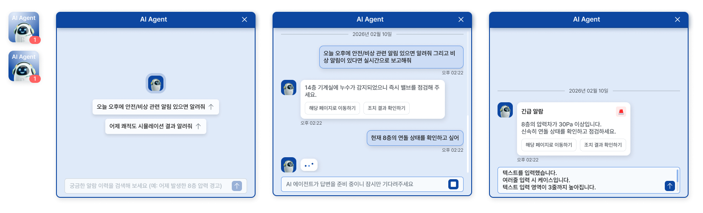
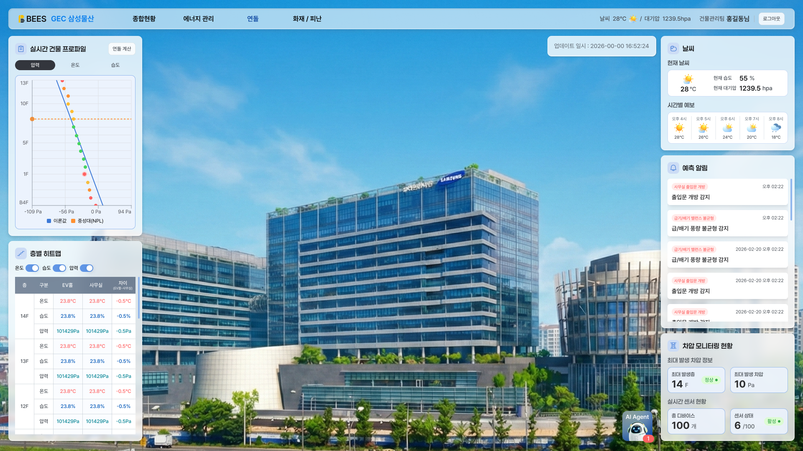
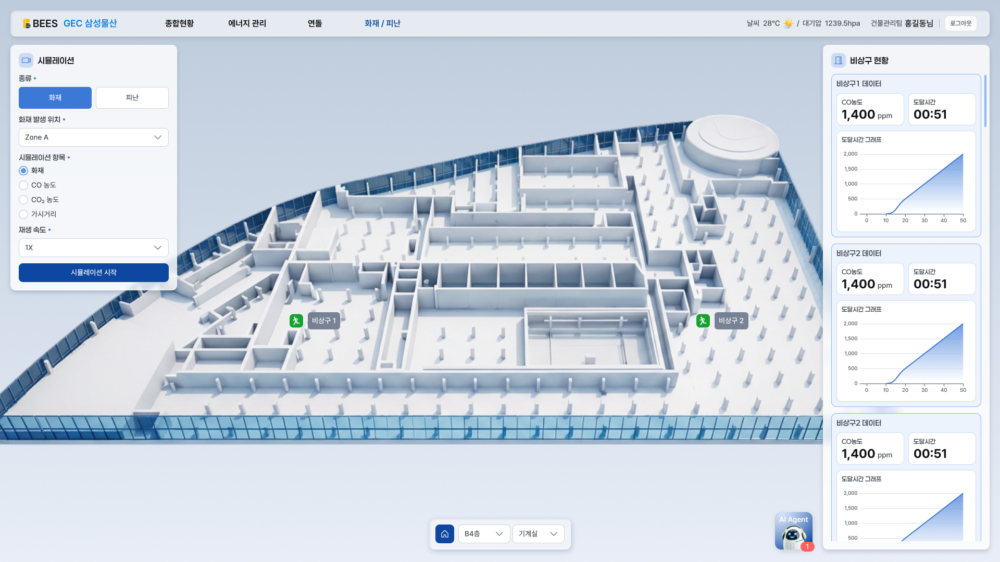
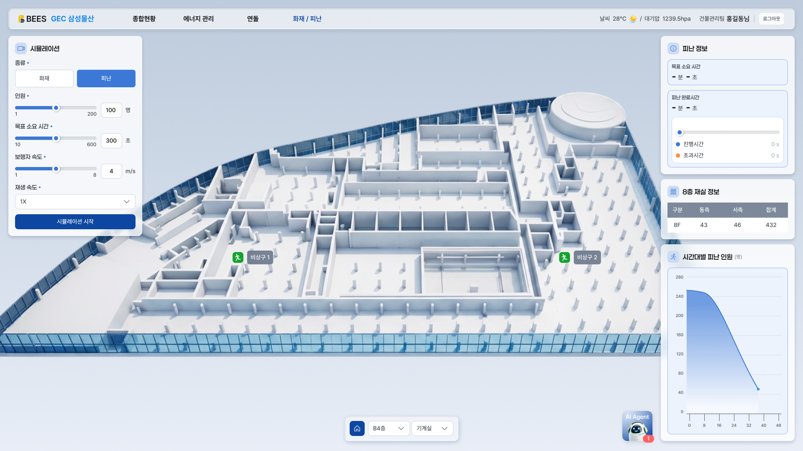

공간과 데이터
건물·층·설비의 데이터가 어느 공간에 속하는지 함께 읽혀야 해요.

데이터 위계와 운영 맥락
건물·층·설비의 데이터가 어느 공간에 속하는지 함께 읽혀야 해요.
상태를 확인한 뒤 필요한 조치로 넘어갈 때 맥락이 끊기지 않아야 해요.
기능 이름보다 실제 공간을 따라 필요한 정보를 찾는 흐름을 먼저 봤어요.
건물 → 층 → 설비의 관계를 탐색 구조로 옮기고, 확인 → 판단 → 실행을 연결했어요.
기존 설계 기록에 담긴 관점이에요. 별도의 사용자 조사 결과는 아직 확인되지 않았어요.

전체 에너지 현황을 확인해요.
확인할 공간으로 범위를 좁혀요.
상태를 확인하고 필요한 조치로 이어가요.
기존 설계 설명에서 정보의 관계와 이동 순서를 요약했어요.

반복되는 화면과 예외 상태를 같은 기준으로 다루기 위한 규칙이에요.
컬러·타이포그래피와 컴포넌트 기준을 묶어 화면 간 일관성을 맞췄어요.
Figma 슬롯을 활용해 여러 UI를 같은 패턴 안에서 조합하도록 구성했어요.
UI 상태·인터랙션·예외 케이스를 화면 주석에 연결해 협업 기준을 공유했어요.

통합 관제 에이전트는 제품에 들어간 기능이에요. 디자이너가 작업에 AI를 활용한 기록과 구분해요.
프로젝트에 남아 있는 설계·협업 자료예요.

앞에서 읽은 구조와 설계 기준을 실제 프로젝트 화면에 연결해 보세요.



에너지 데이터를 공간 단위로 읽을 수 있게 정리해요.
상태 확인과 다음 조치를 하나의 흐름으로 다뤄요.
반복 패턴과 예외 기준을 컴포넌트·주석으로 전달해요.
많은 지표를 담는 것보다, 어느 공간의 어떤 상태인지 먼저 읽히는 구조가 중요해요.
공간 탐색과 조치 연결이 실제 운영 업무에서 어떻게 쓰였는지, 검증 자료를 추가할 예정이에요.
성과 수치·사용자 반응·검증 방법과 기간은 자료 확인 후 추가해요. 이 페이지는 기존 프로젝트 기록을 바탕으로 구성했으며, 확인되지 않은 조사·성과를 추정하지 않았어요.